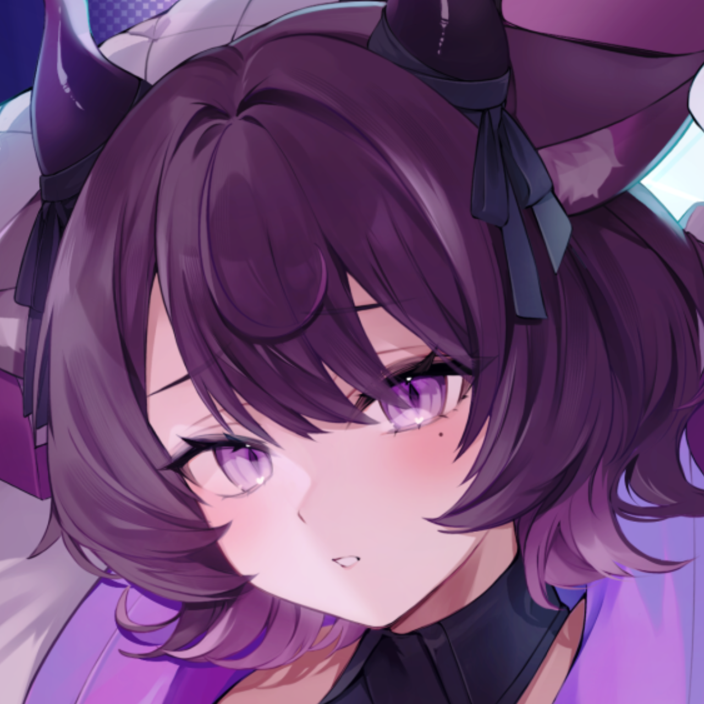
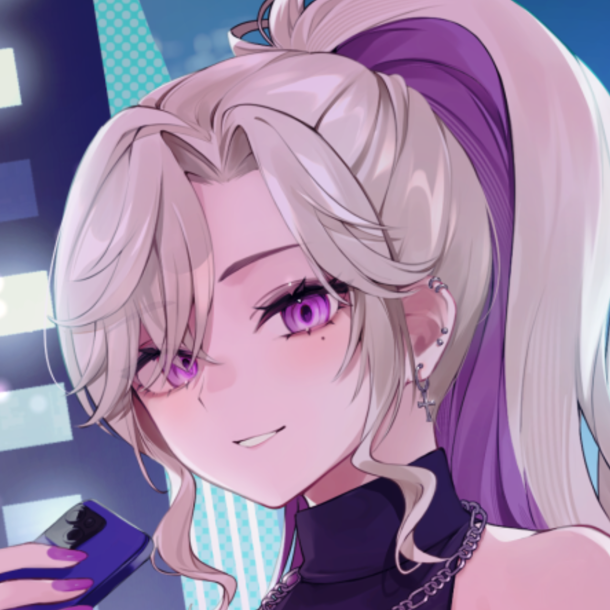
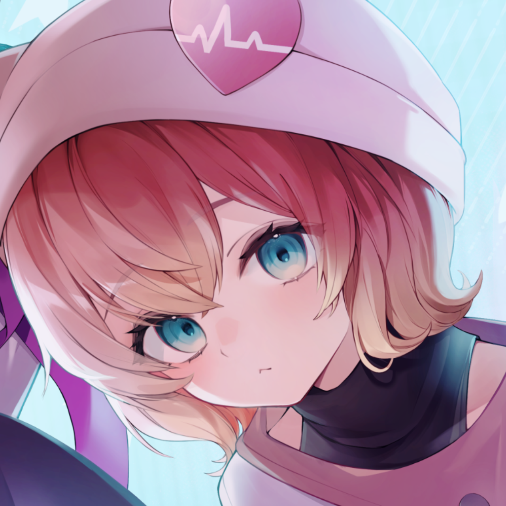

 恋惡まよ Mayo Koaku ま力が弱すぎてま界から追放された落ちこぼれ小悪魔。 普段は黒猫の姿で路地裏でお昼寝している。 担当サーバーハラジュク カラー紫 誕生日12月24日
 玖染しあ Sia Kuzen 人間に擬態したOL堕悪魔。 お茶目なポンコツお姉さんは笑顔を見るのが大好き。 オタクで陰キャなギャップのあるギャル。 担当サーバーシンジュク カラー青 誕生日12月9日
 熊枕くらり Kurari Kumakura 一緒に寿命を伸ばしたいꕤ マイペースだけどパワフルなウォンバットVTuber。 外に出る度に外国人旅行客の道案内クエストをこなしている。 担当サーバーシブヤ カラー黄色 誕生日11月23日